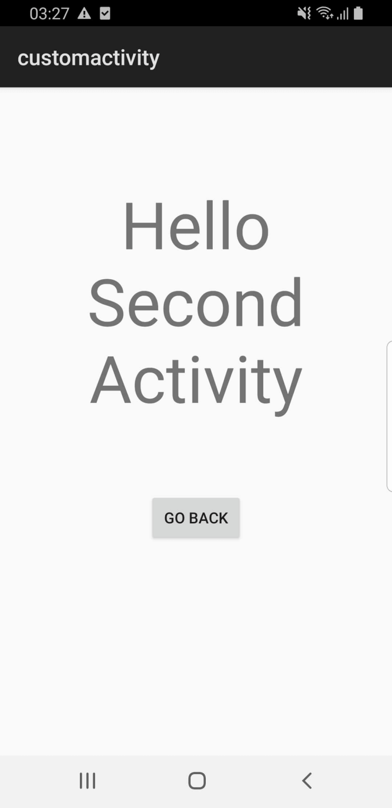

Android Custom Activity
Demonstrates working with custom Android activities.

This example demonstrates how to create an Android Activity and run it from your Qt application. The activity is composed of a Java class and an Android XML layout which is started from the main app. The activity can send back data after finishing which can be used in QML.
When you click the "Start custom Android activity" button, the activity is started, and the activity has a text view and a button to exit. The activity can either use the button or the back gesture to go back.
Running the Example
To run the example from Qt Creator, open the Welcome mode and select the example from Examples. For more information, visit Building and Running an Example.
Create Activity Class
Define an Android class called CustomActivity in the CustomActivity.java file as follows:
package org.qtproject.example.activityhandler;
import android.app.Activity;
import android.content.Intent;
import android.os.Bundle;
import android.view.View;
import android.widget.Button;
public class CustomActivity extends Activity {
@Override
public void onCreate(Bundle savedInstanceState) {
super.onCreate(savedInstanceState);
setContentView(R.layout.second_activity);
Button backButton = (Button) findViewById(R.id.backButton);
backButton.setOnClickListener(new View.OnClickListener() {
@Override
public void onClick(View view) {
Intent resultIntent = new Intent();
resultIntent.putExtra("message", "Back button clicked.");
setResult(Activity.RESULT_OK, resultIntent);
finish();
}
});
}
}
The Activity's layout is defined at customactivity/android/res/layout/second_activity.xml.
To use this Activity, it must be defined in the AndroidManifest.xml file as follows:
<activity android:process=":custom_activity" android:name=".CustomActivity" android:label="-- %%INSERT_APP_NAME%% --">
<!-- android:process=":qt" is needed to force the service to run on a separate process than the Activity -->
<meta-data android:name="android.app.lib_name" android:value="-- %%INSERT_APP_LIB_NAME%% --"/>
</activity>
Note: To use any native JNI calls, you must extend QtActivity instead of Activity.
Start the Activity
To start an Activity from Qt, you need to create an intent using QAndroidIntent, then call QtAndroid::startActivity providing the intent, a custom request code, and a callback function. The latter is called after the activity has finished. You can start the activity as follows:
void ActivityHandler::showSecondActivity() { QAndroidIntent activityIntent(QtAndroid::androidActivity().object(), "org/qtproject/example/activityhandler/CustomActivity"); QtAndroid::startActivity( activityIntent.handle(), REQUEST_CODE, [this](int requestCode, int resultCode, const QAndroidJniObject &data) { activityReceiver(requestCode, resultCode, data); }); }
Then, define the callback function that is called directly after the activity is done:
void ActivityHandler::activityReceiver(int requestCode, int resultCode, const QAndroidJniObject &data) { if (requestCode == REQUEST_CODE) { if (resultCode == RESULT_OK) { const QAndroidJniObject key = QAndroidJniObject::fromString("message"); const QAndroidJniObject message = data.callObjectMethod( "getStringExtra", "(Ljava/lang/String;)Ljava/lang/String;", key.object()); if (message.isValid()) emit ActivityHandler::instance()->receiveFromActivityResult(message.toString()); } else {
Note: You can first check that the requestCode and resultCode are correct.
To connect C++ with QML, add an instance of the C++ class that is handling the JNI logic as a QML property in the main.cpp file:
ActivityHandler *activityHandler = new ActivityHandler(&app);
engine.rootContext()->setContextProperty(QLatin1String("activityHandler"), activityHandler);
Then, add a Connections element to watch for messages from C++ in the main.qml file:
Connections {
target: activityHandler
function onReceiveFromActivityResult(message) {
resultText.text = status + message
}
}
And set the onClicked for the "Start custom Android activity" button to:
onClicked: qtAndroidService.sendToService(pingText.text)
See also Qt for Android and Qt Android Extras.